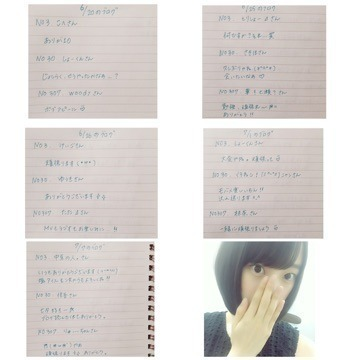

2015/0713Mon日向夏の底
最近学校で久しぶりに会った友達や
撮影現場で会った玲奈さんに
あー！って言いながら
思わずハグをしてしまい
今になってちょっと恥ずかしく
なってきました。
堀未央奈です
人見知りだけど仲良くなると
とことん仲良くなるし
その友達の事を大好きになるから
フレンドリーになります♪
緊急告知になりすみません。
7/13〜17と、もう2日
来週か再来週にOAで
ピラメキーノ640 ドロPに出ます！
モノマネ芸人チームと戦います！
テレビ東京 朝6:40〜
朝、お仕事や学校へ行く前に
観てください(｡･ω･｡)
やっぱり走るの好きやなぁ
いつか逃走中に出るのが夢っ
『夏のホラー秘宝まつり2015』が
8月22日から東京・キネカ大森で
今年も開催されるみたい！
どれも面白そう！
行きたいなぁ(,,•﹏•,,)
中学の時にテキサスチェーンソーや
悪魔のいけにえなどのイメージとなった
「エドゲイン」という人物について調べたり
舞台となったアメリカのテキサス州を
調べたりしていました
ちなみにそれとは正反対のジャンルですが
ジブリももちろん大好きで
生活の一部化としていたのでお部屋でも
サウンドトラックを流しながら
勉強していた中学時代です
深川さんとジブリのお話を
する時間が凄く楽しくて幸せなの♡
今度色んな所行く約束したから
楽しみです！
撮影で着た太陽ノックの衣装！
生田さんのをお借りしました
アンダー楽曲のステージ衣装も
すごく可愛いです。
別れ際のMVの公開はまだ先になります
お楽しみに(*･ω･)ノ
質問返しコーナー
◎みおなは仕事が辛い時とか
追い込まれた時ってありますか？
私は今辞めたいって思ってるぐらい
私は今辞めたいって思ってるぐらい
やりたくなくて、でも途中で
投げ出すのは嫌で今の追い込まれてる
心情をどうにかしたいので
みおなならどう乗り越えますか？
アドバイスください。
◯蟹とか魚が怖いので動物園！
◎ドライブするならどこに行きたい？
◯どんなお仕事か分からないので
アドバイスになれるか分かりませんが...
本当に辛くて耐えられなかったら
辞めるのも1つの道だと思います
でもどんなお仕事でも辛い事は
必ずあります。
辛くても自分を支えてくれる人や
応援してくれる人がいる！って思うと
自信が出て気持ちが強くなれますよ^_^
私は応援しています♫1人じゃないです
一緒に頑張りましょう！
◎今飛んでいきたい所はありますか？
◯夏やから、電車で
遠い田舎に行きたいです。
田舎に泊まろう！という番組
凄く好きやったなぁ、、
◎体調管理のために何か
特別気をつけてることってある？
◯お風呂で温まる、
寝る時にぽんぽんを冷やさない、
一日三食食べる！
◎海外の女優さんで、
好きな女優さんを教えてください！
◯アン・ハサウェイさん、
ミラ・ジョヴォヴィッチさん、
ヒラリー・ダフさん
◎動物園と水族館ならどっちに行きたい？
でもトドとかイルカ見たいなぁ。
どっちでもいいかも(*^^*)
◎ドライブするならどこに行きたい？
◯海沿い(*･ω･)ノ
◎みおなは花火が好き？
どんな花火が好きなのか気になるo(^▽^)o
◯花火未だに怖いんです...
でも色がいろんな色に変わる花火は
綺麗だなぁって思います！
線香花火は不安定な所がまた素敵。
◎浴衣はいつ着る？
◯名古屋と京都♫
違う浴衣を着ます^_^
以上
コメント返し

乃木坂46のドキュメンタリー映画が
公開中です！
舞台挨拶にも出させていただきました。
ドキュメンタリーを観て、私達2期生が
知らなかった乃木坂46を少し
知る事ができました。
みんな悩んで傷ついて
それでも前を見て歩き続ける
それぞれ違う人間で悩みも違うけど
向いている方向は同じなんだなぁ
って思いました。
まだまだ映画には映っていなくても
1人1人に色んなドラマがあって
そんな部分をいつか何かしらの形で
皆さんにも知ってもらえたらいいなぁと
思いました...
自分を追い込む、成長できる機会を
いただける事は自分自身に
日々刺激を与えられます。
もっといろんな事に挑戦していきたいし
自分で自分に限界を作らずに
少しずつ少しずつ周りの人に
頼りながらも成長していきたい。
悔しいっていう気持ちも忘れずに。
感謝の気持ちはもっと忘れずに。
これからも乃木坂46として
みんなで頑張っていきたいです！
是非是非、劇場で観てください♫
そして、映画の舞台挨拶では
深川さん、若月さんと
名古屋と浜松にお邪魔しました〜
凄く緊張しました。
前日は名古屋で夜ごはんを
お腹いっぱい食べてベマーズを
みんなで観たの！
面白かった〜(^-^)/
私もちょこっと出ます♪
12thシングルのペアPVは
私はType-Cに入っています！
「かなしくない〜i'm not sad〜」
監督は今泉さん
ペアは日奈子
同期で一緒に選抜を経験した仲間^_^
私は病気と闘う女の子の役です。
日奈子は私の友達。
辛い事も楽しい事も色んな悩みを
分かり合える
すれ違っても必ず戻ってこれる
日奈子とペアPVができて
良かったです！
私と日奈子にしかできない作品、台本を
今泉監督が作ってくださいました！
ほぼ素に近い私達を是非見てください
もっとお芝居がやりたい！
告知
◎日経エンタ
◎7/17 LARME (みなみと)
◎7/17 美術手帖
◎7/17 読売中高生新聞
◎7/23 soup.
◎7/24 smart
◎7/24 SamuraiELO
◎7/24 Street Jack
◎7/24 ヤングアニマル
◎7/30 BUBKA
◎8月(まだ未定)
グラビアザテレビジョン(日奈子と)
◎毎週日曜日 0:00〜
【乃木坂工事中】
◎毎週月曜日 23:58〜
【初森ベマーズ】
【初森ベマーズ】
◎毎週月曜 25:29〜
【NOGIBINGO!5】
今日は記念すべき第一回目！
あれにも出ます！見てください♬
◎7/13〜17と来週か再来週に2日
午前6:40〜
【ピラメキーノ】
◎7/18 23:30〜0:49
【ケータイ大喜利】
◎7/21 24:55〜
【BOMBER-E p-ナイト】
愛知県で女子旅をしました。
◎7/19 23:30〜24:00
【のぎえいご】
去年の夏はあまり撮影が
無かったので今年は沢山
お知らせができて嬉しいです^_^
ではでは
今日のNOGIBINGO!5は
記念すべき第一回！
見逃したらあかんよ♪
おやすみおな(ヽ´ω`)
2015/07/13 21:24
コメント(645)
ブログ更新ありがとう！
自分も人見知りで仲良くなると話すけど結構時間がかかるかなぁ…
別れ際、もっと好きになるのPV早く見たい！
今日はNOGIBINGO!5だＯ(≧∇≦)Ｏ
早く帰らねば！
ではおやすみおな(^-^ゞ
ほりっぴ～、ナンチです
おっつー
ハグって結構やっちゃうかも
なんか近くなった感じがする
う～ん、ほりっぴ～の逃走中がみたいぞ～
べマーズはいつかなぁ
明日乃木ドキュ観に行ってきます
もうガマンの限界です
おっつー
ハグって結構やっちゃうかも
なんか近くなった感じがする
う～ん、ほりっぴ～の逃走中がみたいぞ～
べマーズはいつかなぁ
明日乃木ドキュ観に行ってきます
もうガマンの限界です
未央奈ちゃんのブログ見て今日一日ハッピーで終わりそう♡
こないだのブログでコメントしたんだけど途中で切れちゃってました(^^;;ごめんなさい！
CDタイプCじゃなくてAにしてしまい、未央奈ちゃんのが見れないじゃん！というハプニングが起きました笑 Cも買おうかな〜
誰かも言ってたけど、女の子からのコメントも嬉しいですか？？
こないだのブログでコメントしたんだけど途中で切れちゃってました(^^;;ごめんなさい！
CDタイプCじゃなくてAにしてしまい、未央奈ちゃんのが見れないじゃん！というハプニングが起きました笑 Cも買おうかな〜
誰かも言ってたけど、女の子からのコメントも嬉しいですか？？
みおな～
俺もみおなともっと仲良くなりたいな～
映画２回見たんよ
最後のみおなの笑顔で感動したよ
もっと乃木坂の事好きになったしみおなの事も好きになったからこれからも応援するね
最近暑くなってきたから、体に気をつけてください
おやすみす
俺もみおなともっと仲良くなりたいな～
映画２回見たんよ
最後のみおなの笑顔で感動したよ
もっと乃木坂の事好きになったしみおなの事も好きになったからこれからも応援するね
最近暑くなってきたから、体に気をつけてください
おやすみす
京都の時浴衣みおな見るの楽しみ♩
ドキュメンタリー今週見に行く予定だよ♡
はやくみおなに会いたーい♡
ドキュメンタリー今週見に行く予定だよ♡
はやくみおなに会いたーい♡
みおなちゃーん❤︎
ピラメキーノ、見るね！
ピラメキーノ、見るね！
みおなー(((o(*ﾟ▽ﾟ*)o)))
福岡NOGIBINGO映らへんよ〜
福岡NOGIBINGO映らへんよ〜
逃走中とか出たら普通に逃げ切れそうな気がする〜
ペアPVもすごい楽しみです‼早く見たいな〜
ペアPVもすごい楽しみです‼早く見たいな〜
こんばんは(^-^)
俺も人見知りだけどなかなか治らないよね^^;
人見知りってなおるのかな？？
学校行く前に見るね
俺も人見知りだけどなかなか治らないよね^^;
人見知りってなおるのかな？？
学校行く前に見るね
みおなーーー
久しぶりのコメントだ！！
今日のノギビンゴみるよ！！
テレビの前でもう待機してる*\(^o^)/*
ホラーと言えばこの前アナベルみたの！！
びっくりしすぎて声でなかった笑、
ドキュメンタリー木曜日見にいくの！！また違うみんなを見ることできるのが、たのしみだな。
みおなのこの夏絶対見た方がいいホラー映画はなんですか？？
久しぶりのコメントだ！！
今日のノギビンゴみるよ！！
テレビの前でもう待機してる*\(^o^)/*
ホラーと言えばこの前アナベルみたの！！
びっくりしすぎて声でなかった笑、
ドキュメンタリー木曜日見にいくの！！また違うみんなを見ることできるのが、たのしみだな。
みおなのこの夏絶対見た方がいいホラー映画はなんですか？？
未央奈ちゅんはホント癒し系(*´ω｀*)
その癒しはどこから出してるの？w
その癒しはどこから出してるの？w
最近、パソコン買ったけどぜんぜんうまく使いこなせない（;￣O￣）
話は、変わりますが応援してます！！
話は、変わりますが応援してます！！
お疲れ様です
お仕事たくさんだね。！
大変だけどしっかり休養はとってね。！
お仕事たくさんだね。！
大変だけどしっかり休養はとってね。！
みおな、もう直ぐ夏休みだねライブとかで忙しいと思うけど
何か夏にやりたい事とか有るかな
NOGIBINNGO!5放送していないから見れないのが残念
のぎえいご見るね
台風も来そうだし暑いので体調崩さないようにね
みおながいないと楽しみが半減する
太陽ノックのPV待ちきれないな
何か夏にやりたい事とか有るかな
NOGIBINNGO!5放送していないから見れないのが残念
のぎえいご見るね
台風も来そうだし暑いので体調崩さないようにね
みおながいないと楽しみが半減する
太陽ノックのPV待ちきれないな
未央奈！！
告知たくさんだね
頑張ってる未央奈を思い浮かべると私も頑張ろうって思えるからお互い頑張ろうね
あと、別れ際、もっと好きになるっていう曲めっちゃ楽しみにしてるからね(*Ü*)ﻌﻌﻌ♥
ではでは、また(｡･ω･｡)ﾉｼ
しょーさん
告知たくさんだね
頑張ってる未央奈を思い浮かべると私も頑張ろうって思えるからお互い頑張ろうね
あと、別れ際、もっと好きになるっていう曲めっちゃ楽しみにしてるからね(*Ü*)ﻌﻌﻌ♥
ではでは、また(｡･ω･｡)ﾉｼ
しょーさん
未央奈、おはよう。こんにちは。こんばんは。
俺も未央奈とフレンドリーになりたいぜぇ(*´罒`*)笑
NOGIBINGO5 スタートおめでとー！
乃木中、ベマーズと、乃木坂の番組いっぱいで嬉しいよヽ(｡･∀･)ﾉ
映画観たよ
ラスト、衝撃的だった…
色々と考えさせられる映画だったなぁ…
太陽ノック、もうすぐリリースだね
未央奈、難しそうな役をやってるね
全タイプもちろん買うので、きいちゃんとのペアPV楽しみにしてるね
最近急に気温が高くなって、身体がまだ暑さについていけてない(>_<)
未央奈も体調に気を付けて、学校やお仕事頑張ってね！
俺も未央奈とフレンドリーになりたいぜぇ(*´罒`*)笑
NOGIBINGO5 スタートおめでとー！
乃木中、ベマーズと、乃木坂の番組いっぱいで嬉しいよヽ(｡･∀･)ﾉ
映画観たよ
ラスト、衝撃的だった…
色々と考えさせられる映画だったなぁ…
太陽ノック、もうすぐリリースだね
未央奈、難しそうな役をやってるね
全タイプもちろん買うので、きいちゃんとのペアPV楽しみにしてるね
最近急に気温が高くなって、身体がまだ暑さについていけてない(>_<)
未央奈も体調に気を付けて、学校やお仕事頑張ってね！
更新お疲れ様！自分も人見知りなところあるな…でも1度仲良くなったら結構フレンドリーになるところ似てる気がする。なんか嬉しい…笑
ドロP早起きしてみたよ！！少しだけPV流れてたね！早く全編みたい… あのちょっと走ってみてよ。って言われてめっちゃ遠くに行くところ面白くて良かったよd(≧▽≦*)
最近自分もジブリの歌聴いてるよ！なんかあの落ち着いた雰囲気がいいよね！オススメのあったら是非教えてほしい！！
ぽんぽんって表現可愛らしい…久しぶりに聞いたな、ぽんぽん笑
乃木坂の映画今度見に行く！堀ちゃんは少し出てるのかな？とりあえず楽しみ！
12thはとりあえずtypeCは絶対買うね！
最近急に暑くなったから体調崩さないように気をつけてね！熱中症は気付いた時には結構進行してて大変だから、こまめに水分補給を！それじゃあﾏﾀﾈ♪ヾ(ﾟ-^*)
ドロP早起きしてみたよ！！少しだけPV流れてたね！早く全編みたい… あのちょっと走ってみてよ。って言われてめっちゃ遠くに行くところ面白くて良かったよd(≧▽≦*)
最近自分もジブリの歌聴いてるよ！なんかあの落ち着いた雰囲気がいいよね！オススメのあったら是非教えてほしい！！
ぽんぽんって表現可愛らしい…久しぶりに聞いたな、ぽんぽん笑
乃木坂の映画今度見に行く！堀ちゃんは少し出てるのかな？とりあえず楽しみ！
12thはとりあえずtypeCは絶対買うね！
最近急に暑くなったから体調崩さないように気をつけてね！熱中症は気付いた時には結構進行してて大変だから、こまめに水分補給を！それじゃあﾏﾀﾈ♪ヾ(ﾟ-^*)
ホラーの季節！！みおなちゃんの季節！！
そしてなにより告知が沢山は本当にうれしゅうございます＾＾
そしてなにより告知が沢山は本当にうれしゅうございます＾＾
ひたすら、何にサインをしてもらおうか考える日々‥‥
ワクワクです。
個人PVもワクワクして寝れません。
はやくーはやくー(屮°□°)屮！
ワクワクです。
個人PVもワクワクして寝れません。
はやくーはやくー(屮°□°)屮！
みおなちゃん可愛い
みおなありがとうー！
755のコメント返しもありがとね！ファン思いなみおなを陰ながらいつも応援してます。受験勉強で忙しくてコメントとかも遅れるかもしれないけどよろしく！！応援してくれるとやる気倍増だぁ(*´▽｀*)
今日はﾉｷﾞﾋﾞﾝｺﾞ！もちろんリアルタイムでみて明日寝坊コース間違いなし(^-^)
でわまたねー！良い日になりますように・｡♪*+o
Rinより
755のコメント返しもありがとね！ファン思いなみおなを陰ながらいつも応援してます。受験勉強で忙しくてコメントとかも遅れるかもしれないけどよろしく！！応援してくれるとやる気倍増だぁ(*´▽｀*)
今日はﾉｷﾞﾋﾞﾝｺﾞ！もちろんリアルタイムでみて明日寝坊コース間違いなし(^-^)
でわまたねー！良い日になりますように・｡♪*+o
Rinより
未央奈！
bingo見たいけど、俺の住んでる地域はやってないの(>_<)
明日必ず見るぜぇ！！！
今日はうだるような暑さだったね…駅前の温度計に38℃ってなってて悲しくなったよ。。
熱中症には気をつけてね
bingo見たいけど、俺の住んでる地域はやってないの(>_<)
明日必ず見るぜぇ！！！
今日はうだるような暑さだったね…駅前の温度計に38℃ってなってて悲しくなったよ。。
熱中症には気をつけてね
舞台挨拶、未央奈が緊張してるのが見えてすごく可愛かったよ(*ﾉωﾉ)
名古屋の舞台挨拶行ったよ
年甲斐もなく映画見て泣いてしまった…
映画見て改めて未央奈を推していきたいって思ったよ
年甲斐もなく映画見て泣いてしまった…
映画見て改めて未央奈を推していきたいって思ったよ
未央奈こんばんわ！雑誌とかテレビとか未央奈がたくさんメディアに出る機会が多くてうれしい✩
最近は暑いから体調管理に気を付けてお仕事頑張ってね( ^ω^ )
最近は暑いから体調管理に気を付けてお仕事頑張ってね( ^ω^ )
みおなちゃんめっちゃ可愛いね！あだ名付けてよ！✌( ˙-˙ )✌
私は名古屋人だから、名古屋たくさん来てくれて本当に嬉しいです！！！
太陽ノックの衣装、とっっっても可愛い似合ってる
太陽ノックの衣装、とっっっても可愛い似合ってる
やぁ(」・ω・)
ブログ更新ありがとう！今年もみおなにとって充実した夏になりそうだね✨雑誌も全部買うね(^^)
今日は755で、コメント返してくれてありがとうございました♡！！ずっと染めるか悩んでいたので堀ちゃんの大切な意見を聞くことができてとても嬉しかったです！！
映画、今度友達と観に行きます！！お友達も乃木坂を好きになってくれたらいいな〜！！楽しみです！！
堀ちゃんのお仕事がたくさんでとても嬉しいです〜！！楽しみ〜♡
映画、今度友達と観に行きます！！お友達も乃木坂を好きになってくれたらいいな〜！！楽しみです！！
堀ちゃんのお仕事がたくさんでとても嬉しいです〜！！楽しみ〜♡
ドキュメンタリー観たよ！！
メンバー1人1人が自分の夢に向かって、自分の考えを持って進んでいく逞しさだったり、周りとの助け合いだったり、合格してから今までの心の変化だったり。
いつもなら見れない、メンバーの心の中まで観れた気がしたし、最後の未央奈の大きな決断も、すごい心に響いた。
そして、人間としてみんなかっこいいなって思った！
ドキュメンタリーを通して、改めて自分の「夢」について考えることが出来たし、さらに「やってやるぞっ！！」って気持ちになった(・ω・)ノ
なんか悩んでた自分が恥ずかしくなった！！
ありがとー(^O^)／♪♪
メンバー1人1人が自分の夢に向かって、自分の考えを持って進んでいく逞しさだったり、周りとの助け合いだったり、合格してから今までの心の変化だったり。
いつもなら見れない、メンバーの心の中まで観れた気がしたし、最後の未央奈の大きな決断も、すごい心に響いた。
そして、人間としてみんなかっこいいなって思った！
ドキュメンタリーを通して、改めて自分の「夢」について考えることが出来たし、さらに「やってやるぞっ！！」って気持ちになった(・ω・)ノ
なんか悩んでた自分が恥ずかしくなった！！
ありがとー(^O^)／♪♪
映画見てきたよ〜！！
755にもコメントしたけど
最後のみおなのシーンが私的にすごく衝撃的で
とても泣けました。
髪切って笑顔のみおながとてもかわいくて
またさらに泣けました。
アンダーセンター とても楽しみにしています
早く見たいです❤︎
これからも応援してます！
755にもコメントしたけど
最後のみおなのシーンが私的にすごく衝撃的で
とても泣けました。
髪切って笑顔のみおながとてもかわいくて
またさらに泣けました。
アンダーセンター とても楽しみにしています
早く見たいです❤︎
これからも応援してます！
最近乃木坂がテレビにでて嬉しい！
もっといっぱいみたいな〜
でも体調には気お付けてほしい。
未央奈も単独でのテレビ出演✨
こんなに嬉しいことはないよ！
映画めっちゃ感動した
未央奈のシーンは短かったけど
なにか胸にささった
乃木坂に対する思いがある泣
頑張ってな〜
もっといっぱいみたいな〜
でも体調には気お付けてほしい。
未央奈も単独でのテレビ出演✨
こんなに嬉しいことはないよ！
映画めっちゃ感動した
未央奈のシーンは短かったけど
なにか胸にささった
乃木坂に対する思いがある泣
頑張ってな〜
浜松の舞台挨拶行ったよ
ラゲ
日々の癒し笑
ファイティーン
パンケーキ
日々の癒し笑
ファイティーン
パンケーキ
みおな‼️
コメント久しぶりやなぁ～
①逃走中、出たいよねぇ‼️
みおなが逃走中に出たら絶対に逃げきれる気がする‼️
だってみおなの50ｍ走のタイムが６秒代だもんね（笑）
いつか、みおなが逃走中に出れることを祈ってるね
コメント久しぶりやなぁ～
①逃走中、出たいよねぇ‼️
みおなが逃走中に出たら絶対に逃げきれる気がする‼️
だってみおなの50ｍ走のタイムが６秒代だもんね（笑）
いつか、みおなが逃走中に出れることを祈ってるね
こんばんは！
ブログ更新ありがとうございます！
なんだか、毎日暑くてダルダルになります！
が、頑張ります(*´ω｀*)
私も人見知りが半端じゃないですが、最近頑張ってます(*´ω｀*)
変わろうと頑張ってます！
みおなさんに質問です！！え
好きな動物は何ですか(*´ω｀*)
おやすみおな(ノ´∀｀*)
ブログ更新ありがとうございます！
なんだか、毎日暑くてダルダルになります！
が、頑張ります(*´ω｀*)
私も人見知りが半端じゃないですが、最近頑張ってます(*´ω｀*)
変わろうと頑張ってます！
みおなさんに質問です！！え
好きな動物は何ですか(*´ω｀*)
おやすみおな(ノ´∀｀*)
映画観たよ。
感動したけど友達の前だったから涙はこらえました。
感動したけど友達の前だったから涙はこらえました。
同い年なのに考え方も生き方も大人で尊敬してます。
また握手会とか行きたいと思ってます！
これからも応援してます！
また握手会とか行きたいと思ってます！
これからも応援してます！
少し久々にコメント致します。
（ただ今１敗中？？？）
>乃木坂46のドキュメンタリー映画が
>公開中です！
…私は、完成披露上映会を、中継で鑑賞しました。
観ている途中で、「乃木坂の歴史、何か抜けているな～。」と思っていたら、
最後に、出てきましたね。
（ただ今１敗中？？？）
>乃木坂46のドキュメンタリー映画が
>公開中です！
…私は、完成披露上映会を、中継で鑑賞しました。
観ている途中で、「乃木坂の歴史、何か抜けているな～。」と思っていたら、
最後に、出てきましたね。
映画見てもっとみおなを応援したくなったよ(>_<)
それにわたしも頑張ろうって思って、みおなに便乗して心機一転髪をバッサリ切ったよ！
そしたらなんか清々しくなって、仕事また頑張ろうって思えた（；＿；）
みおなありがとうー！
それにわたしも頑張ろうって思って、みおなに便乗して心機一転髪をバッサリ切ったよ！
そしたらなんか清々しくなって、仕事また頑張ろうって思えた（；＿；）
みおなありがとうー！
堀ちゃんお疲れ様＼(^^)／
浜松の舞台挨拶行ったよ＼(^^)／堀ちゃんの目の前くらいの席に座ってた(笑)
映画はやっぱり泣いちゃったよ。。いろんな想いがみんなあって、今があるんだろうなって思ったら涙止まらなかった。。
堀ちゃんのロケ地は栄の松坂屋かな？
堀ちゃん、髪切った理由(でいいのかな？)、もう一つの選択肢を選ばずに髪切ることを選んでくれてよかったって思った。
堀ちゃんの決意をずっと応援するからね！
あ、後、帰りの浜松駅で手振ったの俺ね(笑)笑顔で応えてくれてありがとね(^^)
次のポートメッセの握手会行くからねー＼(^^)／
浜松の舞台挨拶行ったよ＼(^^)／堀ちゃんの目の前くらいの席に座ってた(笑)
映画はやっぱり泣いちゃったよ。。いろんな想いがみんなあって、今があるんだろうなって思ったら涙止まらなかった。。
堀ちゃんのロケ地は栄の松坂屋かな？
堀ちゃん、髪切った理由(でいいのかな？)、もう一つの選択肢を選ばずに髪切ることを選んでくれてよかったって思った。
堀ちゃんの決意をずっと応援するからね！
あ、後、帰りの浜松駅で手振ったの俺ね(笑)笑顔で応えてくれてありがとね(^^)
次のポートメッセの握手会行くからねー＼(^^)／
堀北コンビのペアＰＶ予告だけですごいよかったよ！！
本編が気になる！！
早くみたいなぁー！太陽ノック発売まであと少し！！
本編が気になる！！
早くみたいなぁー！太陽ノック発売まであと少し！！
(´･_･`) もひ
未央奈 こむばんは(＾ｰ^)ノ
いよいよホラーの季節？が来たね(#^.^#)
僕はお祭りや花火の方が 好きだけど( ^ω^ )
未央奈 こむばんは(＾ｰ^)ノ
いよいよホラーの季節？が来たね(#^.^#)
僕はお祭りや花火の方が 好きだけど( ^ω^ )
未央奈〜(｡･･｡)♪
755でもコメントしたあーしゅです！笑
最近、乃木坂が大好きで曲も毎日
聴いています。
特に世界で一番孤独なloverが
好きです♪♪
未央奈©は乃木坂の中で好きな曲は
あるー？？
是非教えてほしいなぁ♡
今度、名古屋の握手会に行くね！！
早く会いたいなぁーーー
またコメントするね
755でもコメントしたあーしゅです！笑
最近、乃木坂が大好きで曲も毎日
聴いています。
特に世界で一番孤独なloverが
好きです♪♪
未央奈©は乃木坂の中で好きな曲は
あるー？？
是非教えてほしいなぁ♡
今度、名古屋の握手会に行くね！！
早く会いたいなぁーーー
またコメントするね
未央奈ちゃんこんばんは!!お仕事頑張って下さいね。暑いので熱中症に気をつけてお仕事頑張って下さいね！すいません
未央奈～こんかいブログ長いからいろいろ書きたいけど長くなっちゃうからちょっと少なくして書くね♪
未央奈は仲良くなればフレンドリーになる＝自分も握手会とかで未央奈に覚えてもらって仲良くなれば少しでも素の未央奈を見ることができるかなー？もしそうなら頑張ろᕙ (;｀⊥ ＾★)┐
昨日悲しみの忘れ方みてきたよー！今回の映画は本当にすごかった.·.·゜☆(∩^o^)/乃木坂が乗り越えてきた壁って自分たちには想像できないくらい高くてそれを乗り越えてきた乃木坂はアイドルとして好きってのもあるけど、それ以上に人間として尊敬したよ。自分ももっと頑張らなくちゃなって感じさせられた。たくさんの勇気と感動をもらえて感謝してます(●´ω`●)そして最後の未央奈も髪を切る選択をしてくれてよかったなって。選抜落ちは悔しいと思うけどそれをチャンスにできるのは未央奈の強さ!!誰にも負けてないと思うし、見習わないといけないなって感じた人は多いと思うよ！
次のブログも楽しみに待ってるね^^
未央奈は仲良くなればフレンドリーになる＝自分も握手会とかで未央奈に覚えてもらって仲良くなれば少しでも素の未央奈を見ることができるかなー？もしそうなら頑張ろᕙ (;｀⊥ ＾★)┐
昨日悲しみの忘れ方みてきたよー！今回の映画は本当にすごかった.·.·゜☆(∩^o^)/乃木坂が乗り越えてきた壁って自分たちには想像できないくらい高くてそれを乗り越えてきた乃木坂はアイドルとして好きってのもあるけど、それ以上に人間として尊敬したよ。自分ももっと頑張らなくちゃなって感じさせられた。たくさんの勇気と感動をもらえて感謝してます(●´ω`●)そして最後の未央奈も髪を切る選択をしてくれてよかったなって。選抜落ちは悔しいと思うけどそれをチャンスにできるのは未央奈の強さ!!誰にも負けてないと思うし、見習わないといけないなって感じた人は多いと思うよ！
次のブログも楽しみに待ってるね^^
755で言ってたね‼︎
堀さんが幸せで楽しそうで僕は嬉しいかった‼︎
これからも堀さんが幸せで楽しく過ごしたら良いな〜♪
れなさんと会えて本当に良かったね‼︎
ピラメキーノのリアルタイムで見てるよ〜♪
堀さんの頑張ってる姿楽しみに見てる‼︎
いつか逃走中出れると良いね‼︎
そん時も僕は見るから知らせてね‼︎
堀さん足早くて良いな〜♪ 羨ましい！
堀さんが幸せで楽しそうで僕は嬉しいかった‼︎
これからも堀さんが幸せで楽しく過ごしたら良いな〜♪
れなさんと会えて本当に良かったね‼︎
ピラメキーノのリアルタイムで見てるよ〜♪
堀さんの頑張ってる姿楽しみに見てる‼︎
いつか逃走中出れると良いね‼︎
そん時も僕は見るから知らせてね‼︎
堀さん足早くて良いな〜♪ 羨ましい！
未央奈ちゃんが掲載されている雑誌が多すぎて追いつかない！笑
嬉しいことです(ヽ´ω`)
はやく別れ際、もっと好きになるのMVみたいな！
楽しみにしてます( ´ ω ` )
あと今日のNOGIBINGOも楽しみにしてます(((o(*ﾟ▽ﾟ*)o)))
おやすみおな(ヽ´ω`)
嬉しいことです(ヽ´ω`)
はやく別れ際、もっと好きになるのMVみたいな！
楽しみにしてます( ´ ω ` )
あと今日のNOGIBINGOも楽しみにしてます(((o(*ﾟ▽ﾟ*)o)))
おやすみおな(ヽ´ω`)


今日も一日お疲れ様〜*\(^o^)/*
今日も暑かったぜよ〜。
ピラメキーノは友達に録画しておいてもらいました^_^
まいまいと未央奈のツーショット見たけど、姉妹みたいで可愛かったよ。
告知いっぱいや〜*\(^o^)/*テレビは見逃さないようにしなきゃね。
悲しみの忘れ方 documentary of 乃木坂46を1人で見てきました。いや〜、あれはズルいですね。絶対泣いてまうやん（笑）感動ポイント多すぎ。
NOGIBINGO!5見るよ〜。
おやすみまる(｡-_-｡)